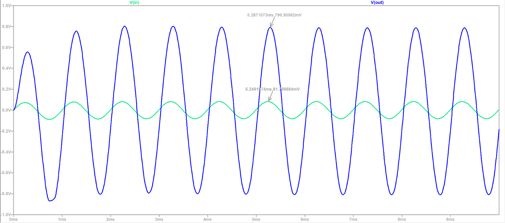
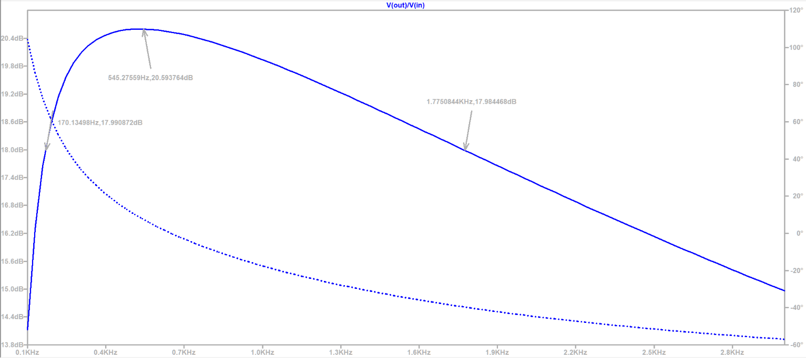
Electrical Engineering | Virginia Tech
LinkedIn | Github | email: advaitg108@vt.edu
I'm an Electrical Engineering junior at Virginia Tech, concentrating in Micro/Nano Systems.
My projects start with a specific problem I want solved and end with me learning the theory underneath it.
I have a passion for building systems from the ground up.
I also enjoy play music, especially Indian Classical Music, and I play the tabla, sitar, and acoustic guitar.
Specifications: To design an audio amplifier which delivers an average power of 0.1 W to an 8-ohm speaker from a piezoelectric transducer that produces a 100 mV peak sinusoidal signal.
This project combines my passion for music and analog circuit design. I designed it around an acoustic guitar, but I aim to improve the design to allow it to be used for anyone's preferred acoustic instrument.
As the name suggests, the pickup uses a piezoelectric sensor/transducer to capture vibrations off the body of an instrument.
After placing the transducer stage, the next logical step would be to add a buffer stage to reduce loading effects of the piezoelectric pickup.
However, a piezo is not your average input.
A piezoelectric transducer uses the piezoelectric effect, which means it accumulates an electric charge when stressed mechanically.
This effect causes it to behave more like a voltage source with a small capacitor in series.
If a circuit with a low resistance is added, the circuit behaves like a high-pass RC filter with a high cutoff frequency.
Therefore, low-band frequencies are attenuated, and the output signal sounds thin.
(You can hear this when you're connecting a piezo directly to an audio power amplifier, such as an LM386).
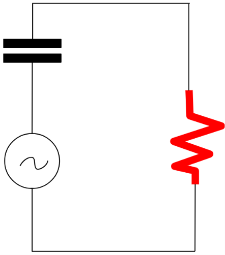
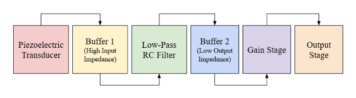
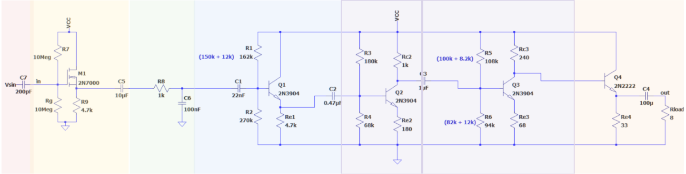
Once the circuit is designed, I simulated the output as a sine wave with an amplitude of 100mV.
I decided on this value after attaching a piezo with a 1M resistor across the leads onto my guitar.
After a couple of strums, I got with an average peak-to-peak value of 100mV. You can see the resulting transient and ac analyses below, which show a voltage gain of approximately 10 (20dB).
 
A note: the MOSFET buffer lowers the input amplitude slightly since a source-follower circuit has a gain of less than 1.
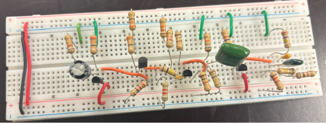
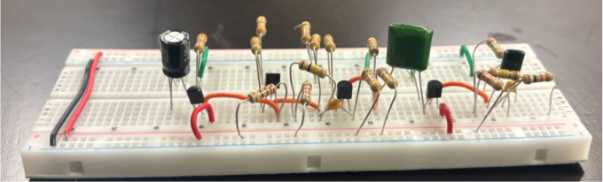
This device is a bluetooth video game controller that runs on an ESP-32 in C++. The project was made so that I could play Minecraft on my phone more comfortably. The device has a modular HAL-architecture that the user can modify as per their needs. The goal was to re-create a game controller as accurately as possible. The gamepad is currently only compatible/usable with iOS.
This project's idea began over my sophomore year winter break due to frustrations with Minecraft's pocket edition interface. I was about to take ECE 2564: Embedded Systems, so this felt like the perfect opportunity to build my own controller and implement the concepts I learned in the course.
V1 was a purely experimental endeavor with no regard for planning, design, or forethought. I just cloned a BLE library and mapped switches to various inputs. I started with basic strafing using four pushbuttons, then replaced the buttons with a joystick. I then added another joystick, triggers, and a D-pad. While I got it to work, it was hardly robust or easy to debug.
I then showed it to my professor, who gave me guidance on how to improve it. As she put it so
eloquently, "This code would get a failing grade if this was submitted in my class."
I implemented her advice in V2.
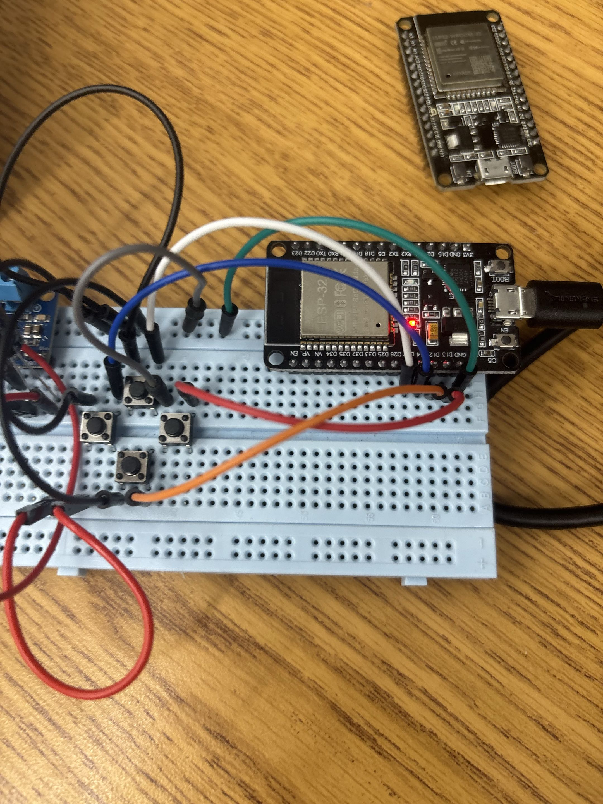
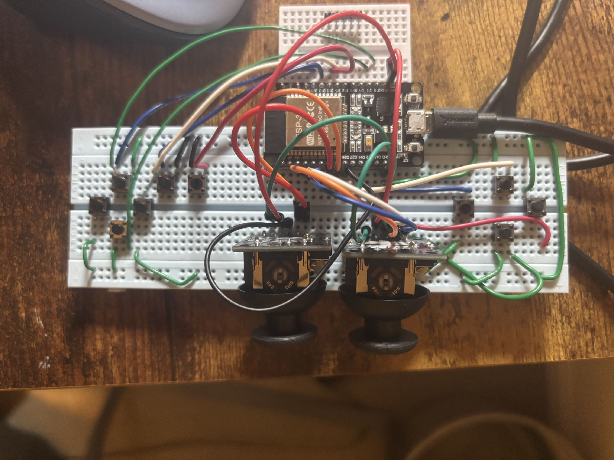
Figure 1 & 2: Early iterations
Figure 3: Final Prototype Iteration (V2) Parts:
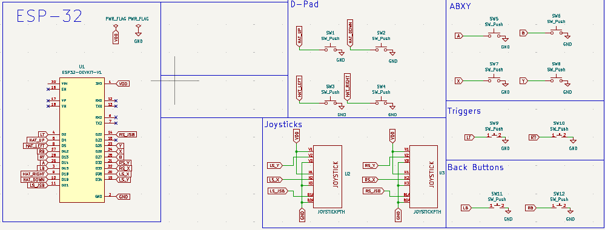
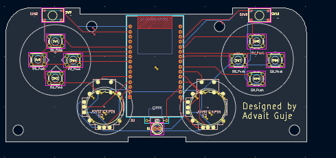
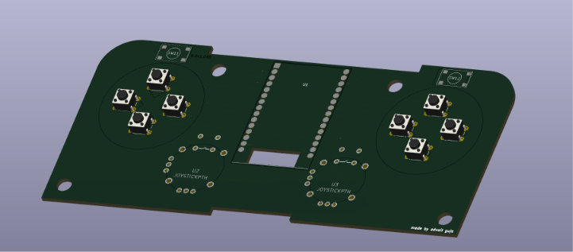
The software was developed in C++ using a modular architecture designed to separate hardware-specific functionality from application logic. All inputs are non-blocking, as in they are sampled once a cycle within the main loop, allowing the controller to remain responsive while simultaneously handling button processing, joystick updates, and Bluetooth communication.
President Walker Award - Pennsylvania State University (2025)